참여가 앱 설치에서 멈췄습니다.
PoC로 연 ZRN 파티(약 100명)에서 미션 참여율은 30%에 그쳤습니다. EarthMera 앱을 먼저 설치해야 Ticketeer에 참여할 수 있었고, 이 설치 단계가 가장 큰 장벽이었습니다.
About
사용자가 어디서 멈추는지 직접 찾아 정의하고, 가설을 세워 설계합니다. 설계한 것은 직접 만들어 데이터로 확인합니다.
Case 01 · EarthMera · New York · 2025
행사 참가자가 부스를 돌며 미션을 하고, 그 기록이 경품과 현장 운영으로 이어지는 이벤트 플랫폼입니다. 앱 안의 작은 기능에서 시작해 PoC를 거쳐 500명 규모 행사에 첫 상용 납품했습니다.
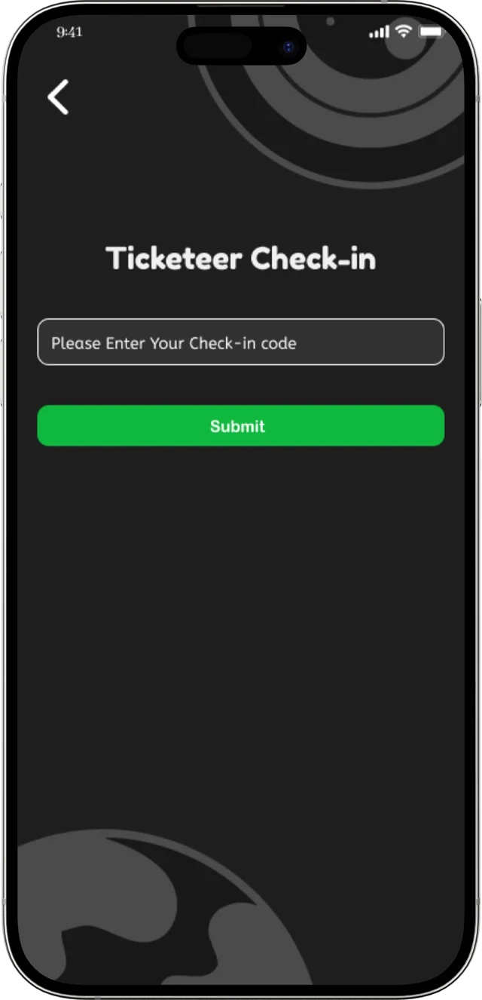
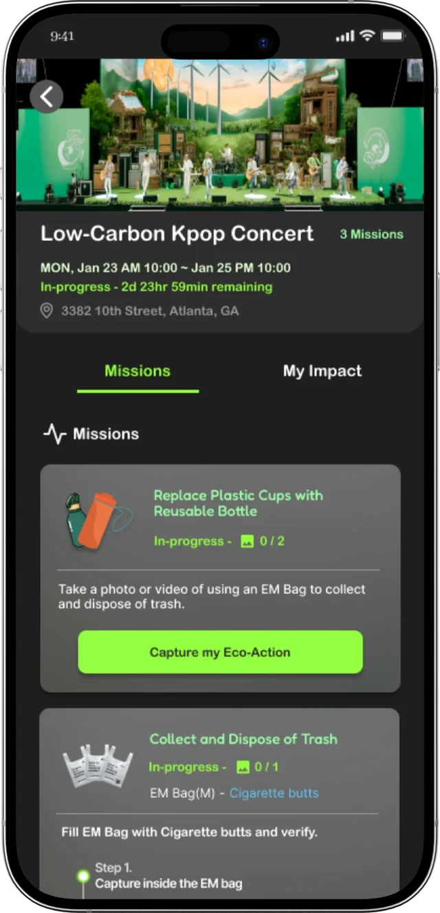
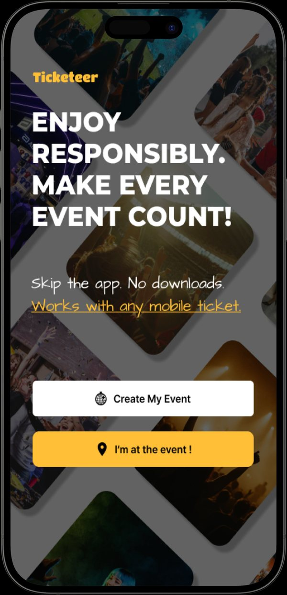


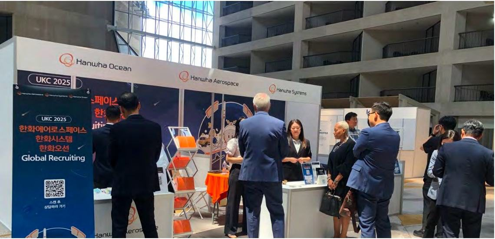

PoC로 연 ZRN 파티(약 100명)에서 미션 참여율은 30%에 그쳤습니다. EarthMera 앱을 먼저 설치해야 Ticketeer에 참여할 수 있었고, 이 설치 단계가 가장 큰 장벽이었습니다.
웹으로 바꿔, 부스의 QR을 찍으면 그 자리에서 미션이 열리게 했습니다. 참가자는 첫 화면에서 바로 첫 미션을 봅니다.
미션 탭을 따로 빼고 버튼을 키웠습니다. 홈에서 경품을 먼저 보여 줘, 끝까지 갈 이유가 보이게 했습니다.
참가자는 미션과 럭키드로우, 부스 관리자는 QR 스탬프와 방문자 그래프, 주최자는 실시간 공지와 추첨을 봅니다. 역할마다 목표가 달라 화면을 처음부터 따로 설계했습니다.
500명, 21개 부스 행사에서 450명이 미션을 끝냈습니다. PoC보다 참여율이 3배 높았고, 행사 뒤 결과를 Post-Event Report로 정리해 납품했습니다.
Case 02 · EarthMera · New York · 2024
개인의 탄소 절감을 기록하고 커뮤니티에서 나누는 모바일 앱입니다. 앱은 있었지만 사람들이 다시 돌아오지 않았고, 홈·활동 기록·포럼을 다시 설계했습니다.
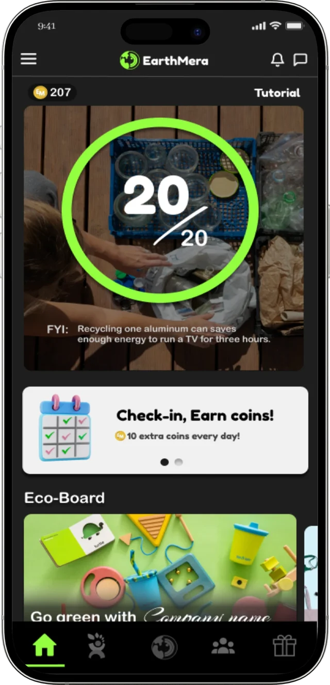
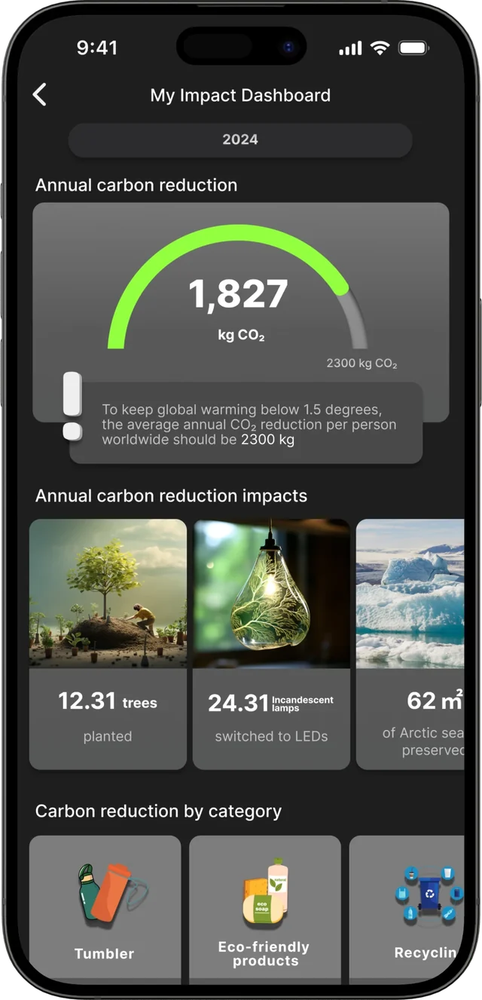
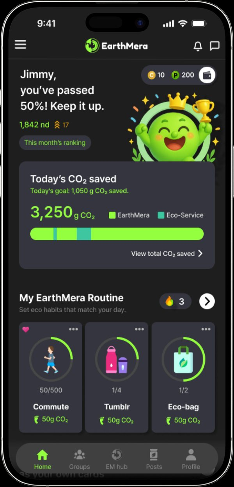
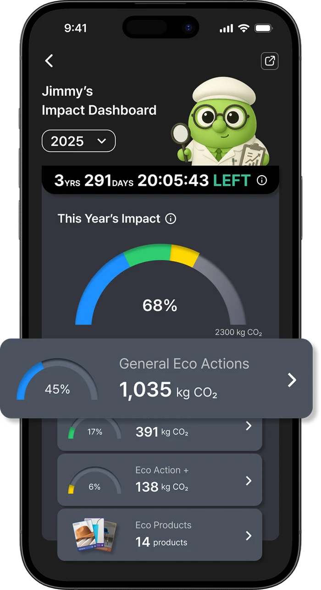
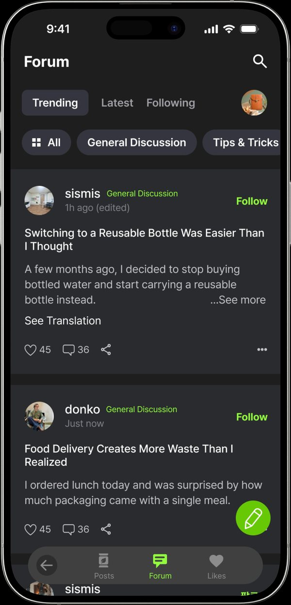
사람들이 한 번 쓰고 다시 돌아오지 않았습니다. 커뮤니티는 짧은 영상을 넘겨 보는 피드라, 보기만 하고 이야기는 쌓이지 않았습니다.
앱의 캐릭터를 진행도 지표로 다시 썼습니다. 오늘의 기록이 캐릭터와 숫자로 바로 보여, 내일 다시 열어 볼 이유가 생깁니다.
임팩트 화면도 캐릭터와 함께 다시 설계했습니다. 올해 목표 대비 진행률과 활동별 탄소 절감량을 한 화면에 모아, 지금 어디쯤 와 있는지 바로 보입니다.
숏폼 피드를 주제별 토론 포럼으로 바꿨습니다. 질문과 경험이 글로 쌓이고, 다른 사람의 글에 답하며 대화가 이어집니다.
개편 뒤 신규 가입자가 약 1,000명 늘었습니다. 이 앱 안의 작은 이벤트 기능은 이후 Ticketeer로 자라났습니다.
Case 03 · 클라이언트 · 2026
월 8천만 원대 매출을 다루는 반려가전 제조·판매사의 운영 대시보드입니다. 문제 정의부터 Claude Code 구현까지 직접 맡았고, 지금도 운영하며 고쳐 나가고 있습니다.


매일 여는 화면이라, 오늘 무엇이 달라졌는지가 가장 먼저 보여야 했습니다. 홈에 KPI 증감 칩과 추세 그래프를 먼저 놓았습니다.
반복되는 문의는 AI가 먼저 답하고, AS와 판단이 필요한 문의는 담당자에게 넘어가도록 흐름을 나눴습니다. 입고부터 출고까지 칸반으로 이어집니다.
색각이상(CVD)을 검증한 팔레트로 매출과 순이익 그래프를 그렸습니다. 원가와 수수료를 반영한 순이익을 바로 계산합니다.
지금 문의의 88%를 AI가 먼저 해결합니다. 운영 중 생기는 문제는 데이터로 원인을 찾아 직접 고칩니다.
More Work
옆으로 넘겨 보세요 →
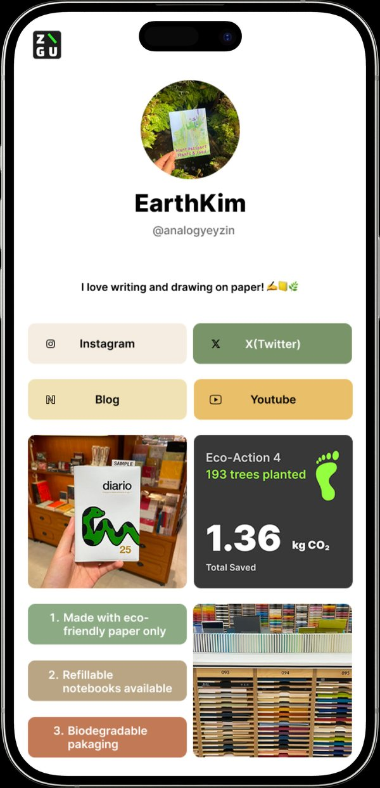

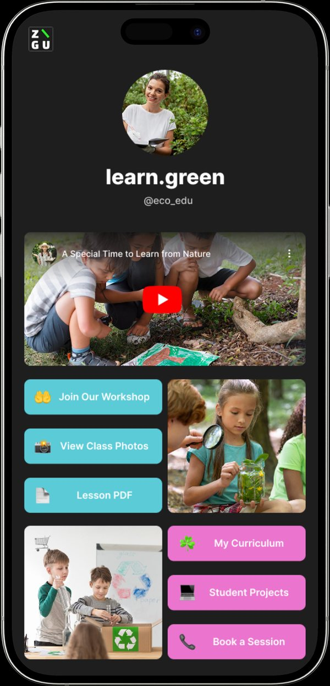
자유도가 높을수록 첫 사용이 어렵다는 문제를, 위젯 선택 → 배치 → 편집 → 완성 4단계 온보딩으로 풀었습니다.
+100 구독 가입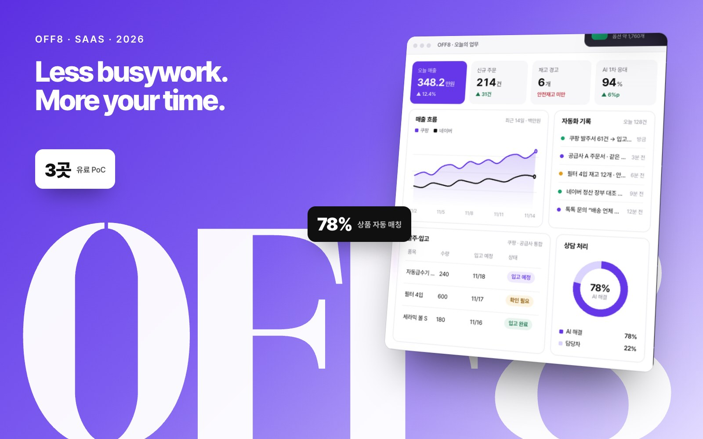
직접 운영한 유료 PoC 3건을 공통 기능과 선택 모듈로 묶고, 사업계획서와 제품 사이트까지 만들었습니다.
3곳 유료 PoC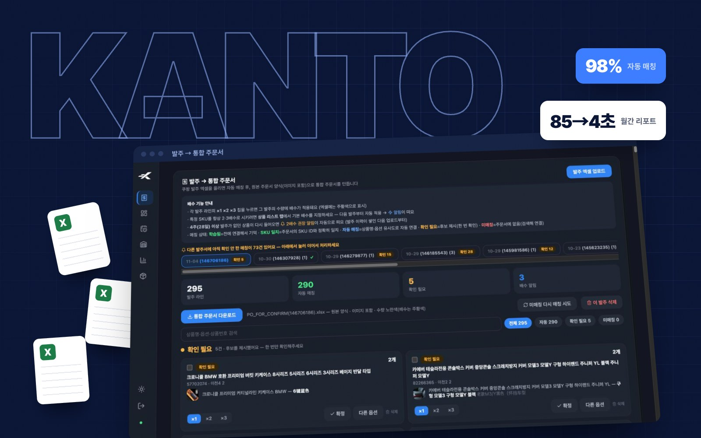
쿠팡 발주서와 공급사 주문서의 같은 상품을 신뢰도 5단계로 맞추고, 사람은 확인이 필요한 것만 봅니다.
98% 자동 매칭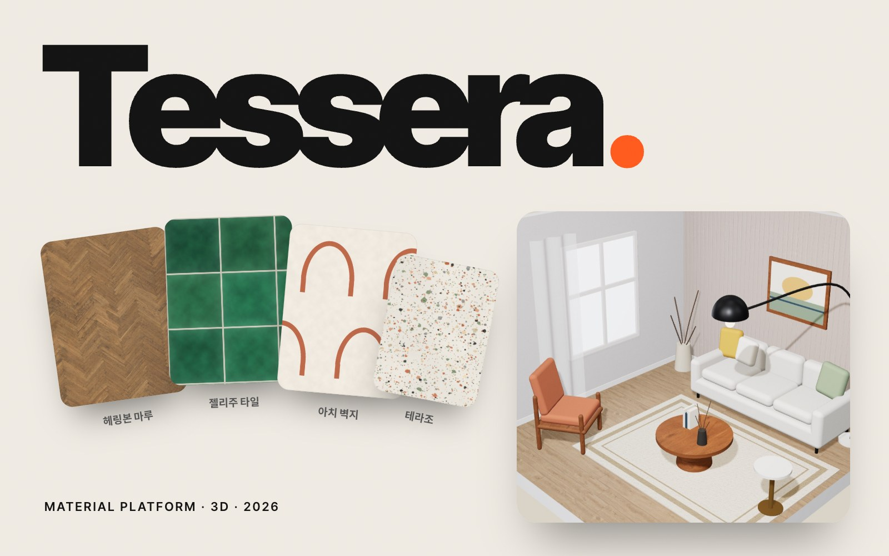
사진만으로는 고르기 어려운 마감재를 3D 방에 직접 깔아 보고, 평수별 견적까지 계산합니다.
34종 자재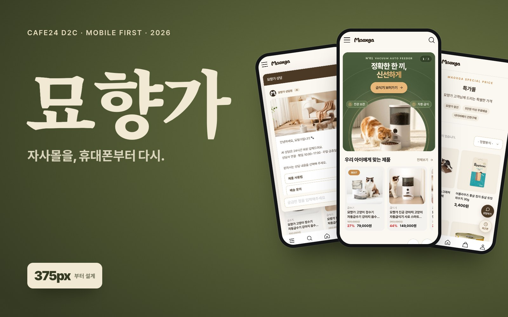
휴대폰 화면에서 먼저 설계하고, 회원·장바구니·네이버페이·상담 위젯까지 연결했습니다.
375px 부터 설계Numbers
How I Work
2026 — 현재 프리랜서 프로덕트 디자이너 · 기획부터 구현·운영까지
2024 — 2025 EarthMera, New York · Lead Product Designer
2023.07 — 2025.05 SUNY Schenectady Community College · Computer Information Systems
Product Strategy · UX Research · 가설 설계와 검증 · Design System · Figma · Claude Code 프로토타이핑